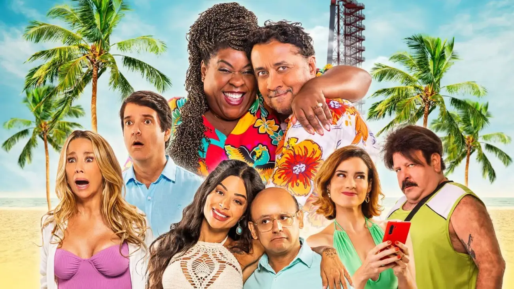
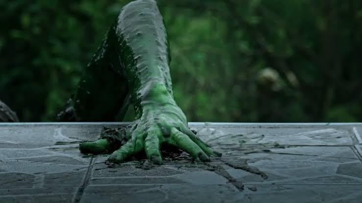
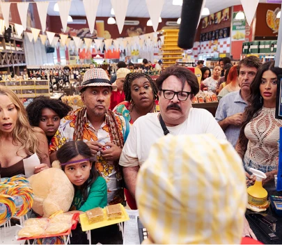

Os Farofeiros
Uma comédia Brasileira que marcou a vida de diversas pessoas.

Prévia
Quatro amigos do trabalho resolvem viajar para uma casa de praia achando que vão ter férias perfeitas. Só que, quando chegam lá, percebem que a casa não é exatamente o que esperavam. A partir daí é só confusão: briga, perrengue, vizinho, praia e muita vergonha alheia Se você gosta de comédia e de ver gente se metendo em cada burrada, esse filme realmente é para você!!
Trailer
Elenco
Maurício Manfrini
Interpreta Lima, é um dos personagens principais que mais se mete em encrencas durante o filme.
Cacau Protásio
Interpreta Jussara, a personagem mais encrenqueira e fofoqueira do filme!
Danielle Winits
Interpreta Renata, a "madame" mais frescurenta e que fez as cenas mais icÔnoicas do filme!
Antônio Fragoso
Interpreta Alexandre, o marido de Renata, onde passa a maior parte do filme tentando acalma-la do que estar por vir!
Charles Paraventi
Interpreta Rocha, um dos integrantes do grupo.
Melhores partes do filme



Curiosidade
A viagem era para ser tranquila, mas tranquilidade passou longe.
O grupo descobre que a casa de praia não era exatamente um lugar de luxo.
Os personagens precisam lidar com brigas, falta de conforto e vários perrengues
O filme brinca bastante com aquele famoso “vamos lá agente resolve" e por fim sai tudo dos combinados!
O nome Os Farofeiros combina com a ideia de uma viagem simples, cheia de improvisos e confusão